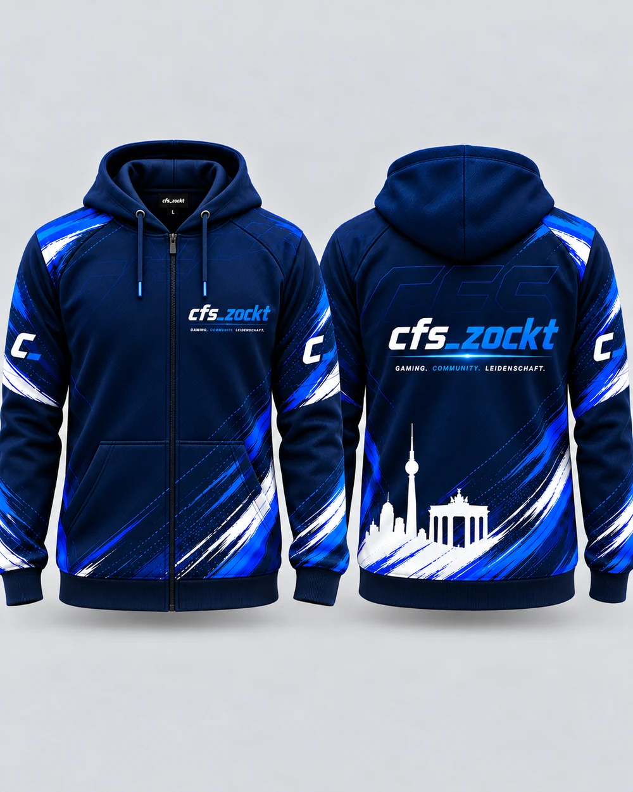
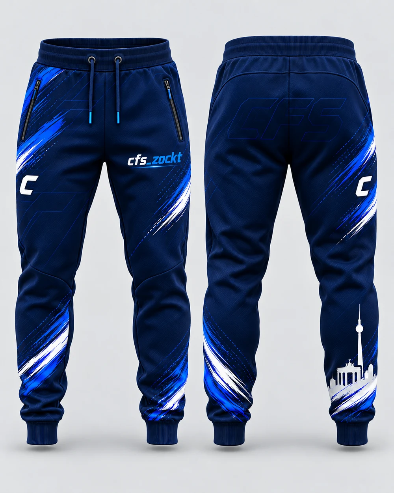
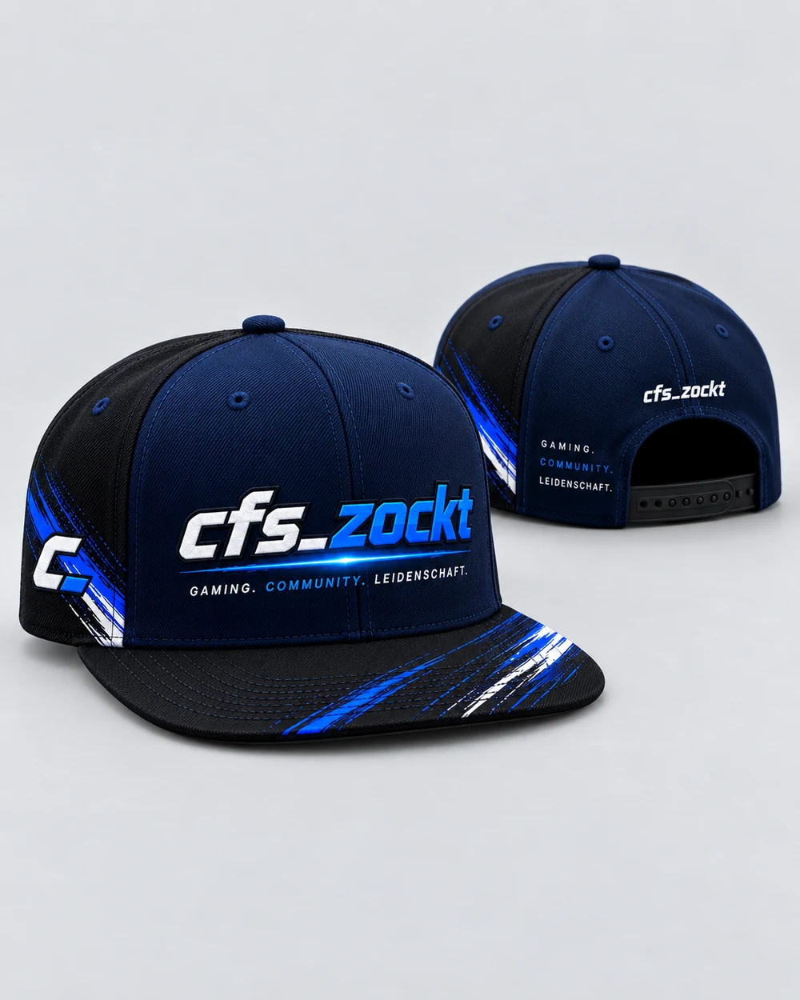
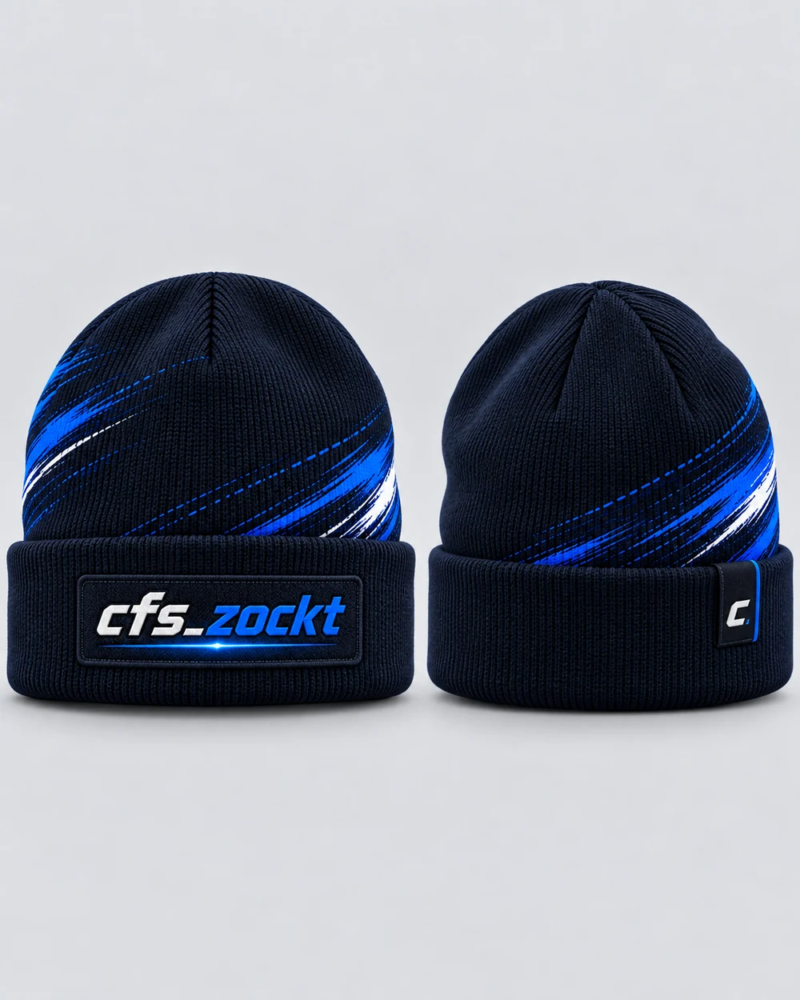
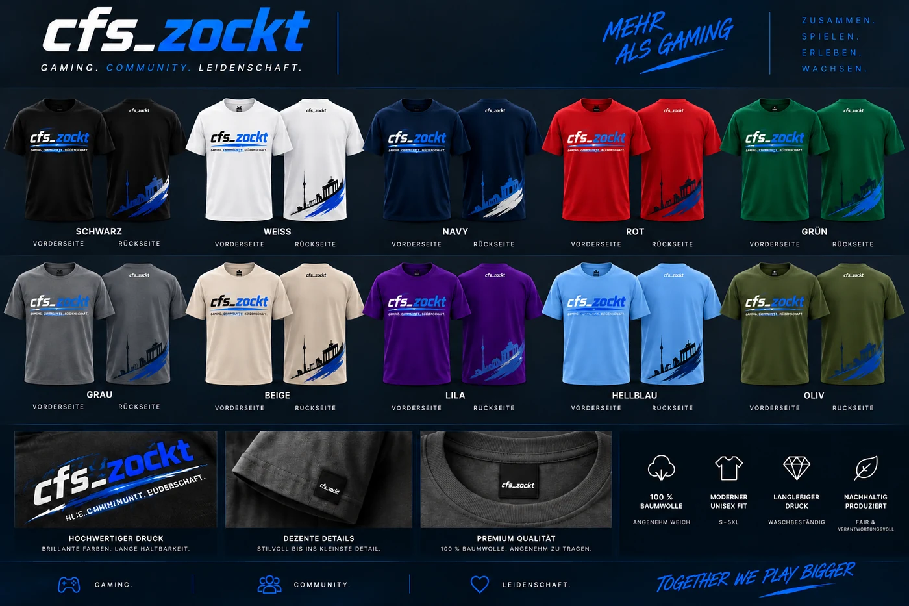
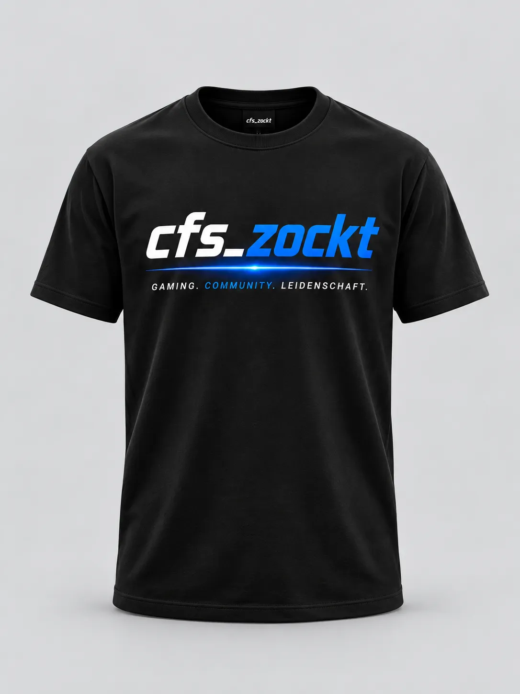
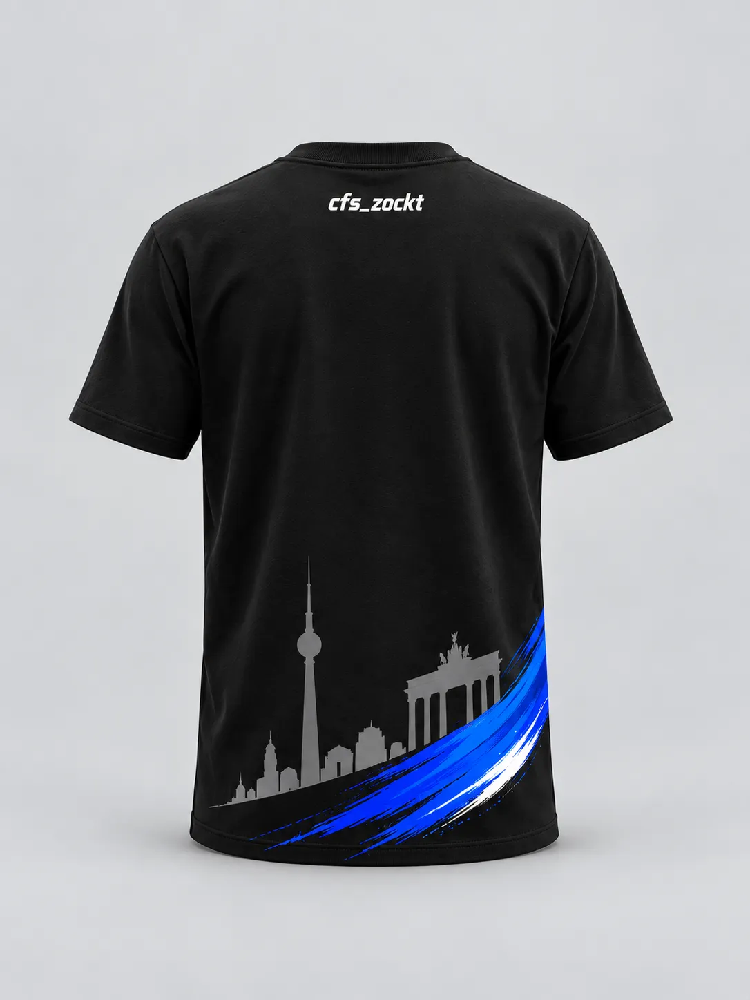
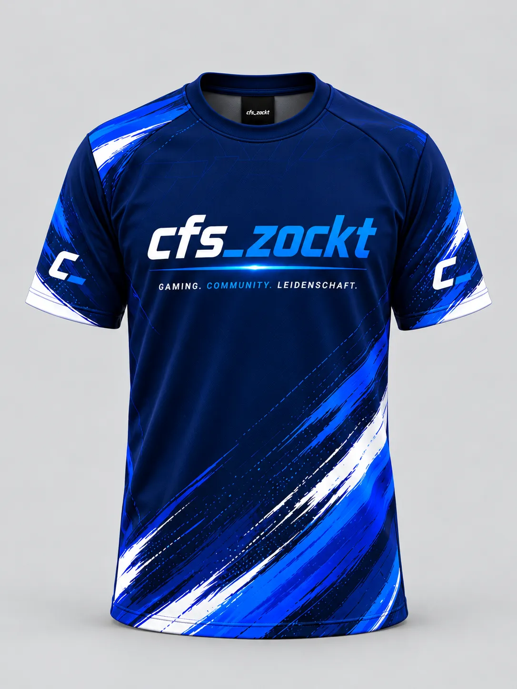
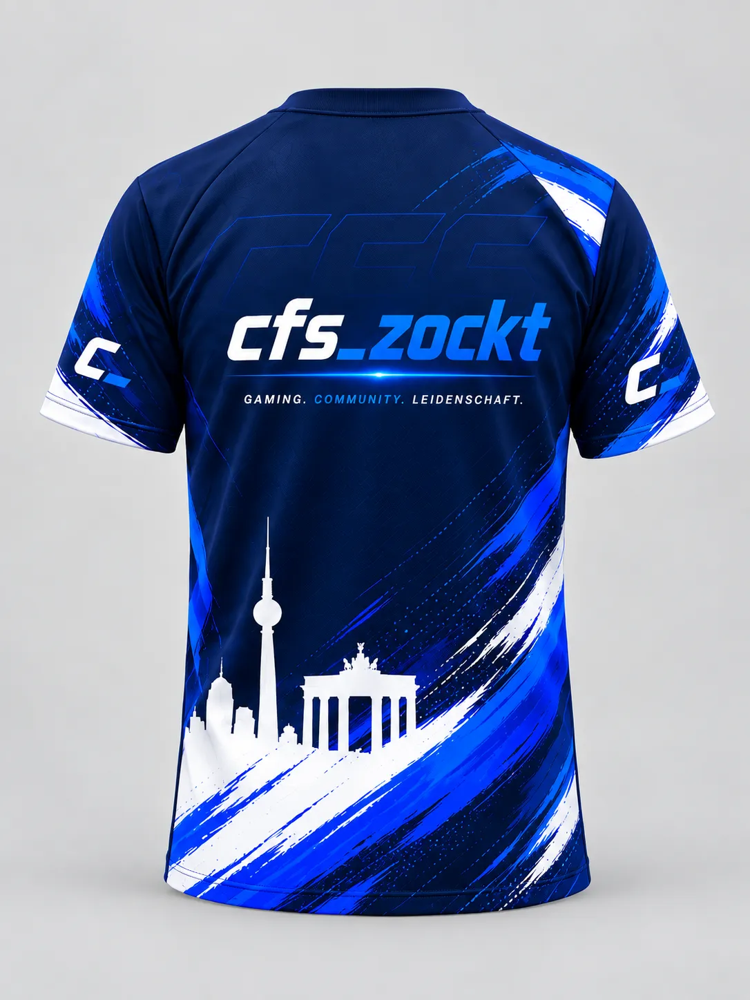

GAMING. COMMUNITY. LEIDENSCHAFT.
MEHR ALS
NUR GAMING.
cfs_zockt verbindet Gaming, Community und Creator Tools: Widgets gestalten, Stream-Flächen planen, eigene Medien nutzen und sauber Richtung OBS ausgeben. Erst ansehen, dann entscheiden.
🎮 Gaming
👥 Community
♥ Leidenschaft
⚡ Creator Tools
cfs_zockt
TOGETHER WE PLAY BIGGER
🎮GAMINGGemeinsam spielen
👥COMMUNITYMenschen verbinden
♥LEIDENSCHAFTFür Stream & Content
⚡TOOLSEinfacher erstellen
VON TIKTOK HIER?
HIER GEHT'S DIREKT WEITER.
Du kommst von einem cfs_zockt Clip oder Stream? Schau dir zuerst die Creator Tools an, spring direkt in die Community oder erstelle einen kostenlosen Account.
NOCH KEIN ACCOUNT? KEIN PROBLEM.
SCHAU DIR ERST AN, WAS DICH ERWARTET.
Du musst dich nicht registrieren, nur um zu verstehen, was die Creator Suite kann. Hier bekommst du zuerst einen kompakten Überblick – danach entscheidest du in Ruhe, ob du starten möchtest.
PRODUKTVORSCHAU · BEISPIELANSICHTDarstellungswerte in den Vorschaukarten sind Beispiele und keine Live-, Nutzer- oder Erfolgsstatistiken.
01 · DESIGN
Widget Studio
Goals, Counter, Timer, Chat und Overlays mit Vorlagen gestalten – als Anfänger geführt oder im Profi-Modus detailliert.
VORLAGEN · THEMES · FARBEN · RAHMEN02 · LAYOUT
Stream Board
Mehrere Widgets gemeinsam auf einer 16:9- oder 9:16-Fläche anordnen und vor dem Veröffentlichen prüfen.
OBS · TIKTOK VERTICAL · SAFE AREAS03 · DEINE MARKE
Eigene Medien
Eigene Bilder, Logos, transparente Overlays und Videos hochladen und direkt in deinen Designs verwenden.
BILDER · LOGOS · OVERLAYS · VIDEOS04 · AUSGABE
Launcher & Output
Veröffentlichte Widgets und Szenen sauber Richtung OBS ausgeben; TikTok-LIVE-Daten werden bei Bedarf über den PC-Bridge-Weg angebunden.
OBS · LAUNCHER · LIVE-DATEN1ERST ANSEHENOhne Registrierung verstehen, was möglich ist.
→
2ACCOUNT ERSTELLENKostenlos registrieren und Creator-Bereich öffnen.Account erstellen →
→
3LOSLEGENWidget auswählen, gestalten, testen und veröffentlichen.
HEUTE IM PRODUKT
NICHT NUR VERSPROCHEN.
KLAR ABGEGRENZT.
Überzeugen soll nicht eine große Zahl, sondern ein nachvollziehbarer Produktstand. Deshalb zeigen wir konkret, was du bereits nutzen kannst – und was bewusst noch nicht als fertig verkauft wird.
Goal, Counter, Timer, Chat und Kamera/Overlay besitzen geführte Schnellstarts. Anfänger arbeiten Schritt für Schritt; der Profi-Modus behält die technischen Detailoptionen.
Themes, Farbpaletten, Rahmen, Presets und eigene Markenfarben lassen sich auf Widgets anwenden, ohne für jedes Element wieder bei null zu beginnen.
Creator-Medien können hochgeladen und wiederverwendet werden. Die Bildbearbeitung speichert Änderungen nicht-destruktiv, damit das Original erhalten bleibt.
Widgets lassen sich mit Layern, Sichtbarkeit, Safe Areas und mehreren Instanzen als Stream-Layout vorbereiten und prüfen.
Veröffentlichte Widgets und Szenen besitzen Output-Pfade für OBS. Der Launcher bündelt lokale Verbindung, Status und Creator-Werkzeuge am PC.
Beta-Hinweise, Sicherheitsdetails, private Problem-Meldung und noch offene Bereiche werden nicht hinter Marketingtext versteckt.
BEVOR DU EINEN ACCOUNT ANLEGSTKOSTENLOS STARTEN.
KOSTENLOS STARTEN.
OHNE BLINDVERTRAUEN.
Neue Creator-Konten starten im FREE Plan. Beim Erstellen des Accounts werden keine Zahlungsdaten abgefragt – und eine Registrierung löst keine automatische Buchung aus.
Für Creator-Name, E-Mail und Passwort wird kein Checkout benötigt. Bezahlte Pläne und Funktionen bleiben ein separater Schritt.
Lange Passphrasen, optionales TOTP-2FA, Recovery-Codes und Passkeys stehen als zusätzliche Schutzschichten bereit.
Aktive Sitzungen lassen sich verwalten. Accountdaten können exportiert und das Konto über den geschützten Account-Lifecycle gelöscht werden.
Die Registrierung erstellt kein kostenpflichtiges Abo. Upgrade- und Billing-Schritte werden getrennt vom kostenlosen Einstieg behandelt.
Du kannst zuerst alles ansehen.Registriere dich erst, wenn die Creator Suite zu deinem Stream passt.
DEIN SCHNELLER WEG
WAS MÖCHTEST DU ALS NÄCHSTES MACHEN?
Du musst nicht die ganze Seite durchsuchen. Wähle einfach den Bereich, der dich gerade interessiert.
WER WIR SIND
MEHR ALS EIN NAME.
EINE COMMUNITY.
cfs_zockt ist rund um Gaming, Streaming und Community entstanden. Im Mittelpunkt stehen nicht nur Spiele, sondern Menschen: zusammen spielen, Erfahrungen teilen, Content machen und voneinander lernen.
Die Creator Suite wächst aus genau diesem Gedanken heraus: Tools sollen verständlich sein und Creatorn Arbeit abnehmen, statt noch mehr Technik vor die Nase zu setzen.
„Gute Streams bringen Menschen zusammen. Gute Tools lassen Creator sich auf genau das konzentrieren.“
— cfs_zockt
COMMUNITY
ZUSAMMEN SPIELEN.
GEMEINSAM WACHSEN.
Hier soll nicht nur konsumiert werden. cfs_zockt soll ein Platz sein, an dem Gaming, Streams, Ideen und Erfahrungen miteinander geteilt werden.
Gemeinsam zocken
Mit anderen spielen, neue Leute kennenlernen und gemeinsam Spaß am Gaming haben.
Streams & Content
Live gehen, Content zeigen und neue Ideen für den eigenen Stream ausprobieren.
Creator unterstützen
Werkzeuge entwickeln, die verständlich bleiben und im echten Streaming-Alltag helfen.
Weiterentwickeln
Die Plattform wächst Schritt für Schritt mit Feedback aus der Community weiter.
DEIN cfs_zockt SYSTEM
Willkommen zurück.
Deine Verbindungen werden geprüft.
Account
Launcher
TikTok
Widgets
ZUM DASHBOARD
TOOLS FÜR DEINEN STREAM
DIE CREATOR SUITE.
Erst hier kommt das Produkt: eine zusammenhängende Tool-Welt für Creator. Website, Windows Launcher, TikTok-Daten und OBS greifen dabei ineinander.
SYSTEM WIRD GEPRÜFTcfs_zockt Creator Suite · Beta
KOSTENLOS STARTEN →
Widget Studio
Counter, Timer, Goals, LIVE-Werte und Alerts mit Vorlagen oder freier Gestaltung.
TIKTOK · OBSStream Board
Fertige Widgets gemeinsam auf einer Streamfläche prüfen, bevor du sie veröffentlichst.
VORSCHAU · LAYOUTCut Studio
Clips schneiden, Ton bearbeiten und lokale Exporte über die Media Engine vorbereiten.
VIDEO · AUDIOWindows Launcher
Device-Link, lokale Tools, Widget-Sync und Systemstatus direkt auf deinem PC.
WINDOWS · SYNCCFS Stream Deck
Virtuelle, frei belegbare Creator-Tasten für häufige Aktionen im Stream.
VIRTUELL · LAUNCHERNOCH NICHT REGISTRIERT?ERST ANSEHEN. DANN ENTSCHEIDEN.Die Übersicht hier ist öffentlich. Für den Creator-Bereich brauchst du erst danach einen kostenlosen Account.
SO GREIFT ALLES INEINANDER
VON cfs_zockt
BIS IN DEINEN STREAM.
Für Anfänger bleibt der Weg linear. Die technischen Details laufen im Hintergrund und werden nur gezeigt, wenn du sie brauchst.
Creator Account anlegen.
ACCOUNT ERSTELLEN →Device-Link koppeln.
Auswählen und gestalten.
Browser Source einbinden.
Loslegen und prüfen.
SICHERHEIT & TRANSPARENZ
VERTRAUEN ENTSTEHT
DURCH KLARE REGELN.
cfs_zockt soll nicht sicher wirken, sondern technisch sauber aufgebaut und ehrlich beschrieben sein. Deshalb zeigen wir öffentlich, welche Schutzmaßnahmen bereits aktiv sind und wo das Produkt noch Beta ist.
Creator-Passwörter werden serverseitig mit scrypt und individuellem Salt verarbeitet. Klartext-Passwörter werden nicht als Login-Geheimnis gespeichert.
Produktive Sessions nutzen Secure, HttpOnly und das __Host--Cookie-Präfix. Schreibzugriffe werden zusätzlich gegen fremde Origins und Cross-Site-Anfragen geschützt.
Login, Registrierung und öffentliche Rezensionen besitzen Begrenzungen gegen automatisierte Massenanfragen und wiederholte Fehlversuche.
Content-Security-Policy, Frame-Schutz, MIME-Schutz, Referrer-Regeln und weitere Header begrenzen typische Browser-Angriffsflächen.
TikTok-Secrets, Access-Tokens und andere vertrauliche Schlüssel gehören nicht in öffentlich ausgeliefertes Browser-JavaScript.
Öffentliche Textkommentare werden moderiert. Es werden keine erfundenen Bewertungen, Nutzerzahlen, Preise oder Merch-Bestellungen angezeigt.
/.well-known/security.txt verweist auf den privaten Sicherheitskontakt und die öffentliche Security-Policy. Support-Meldungen filtern typische Secrets vor dem Speichern.
Die Startseite fragt nur „online oder gestört“ ab. Backend-Version, OAuth-Konfiguration und Moduldetails werden dort nicht mehr an Besucher ausgeliefert.
Die erzwungene Content-Security-Policy kann Verletzungen an cfs_zockt melden. Gespeichert werden aggregierte Muster statt Besucherprofile.
KEIN 100-%-VERSPRECHEN
Sicherheit ist ein laufender Prozess.
Kein Onlinedienst ist seriös „unangreifbar“. cfs_zockt setzt deshalb auf mehrere Schutzschichten, begrenzte Berechtigungen, transparente Beta-Hinweise und gezielte Tests.
VOR DEM ACCOUNTProdukt zuerst ansehenWidget Studio, Stream Board, Medien und Output sind auf der Startseite erklärt, bevor du dich registrierst.
ÖFFENTLICH DOKUMENTIERTSchutzmaßnahmen nachlesenAktive Schutzschichten und noch offene Punkte stehen auf einer eigenen Sicherheitsseite.
PRIVATER MELDEWEGProblem direkt meldenSicherheits-, Datenschutz- und Technikprobleme können nicht-öffentlich an das Admin-System geschickt werden.
STANDARD-PFADsecurity.txt prüfenDer RFC-9116-Meldeweg verweist öffentlich auf Kontakt, Policy, Sprache und Gültigkeit.
CREATOR-EMPFEHLUNGEN
PASSENDE TOOLS.
KLAR GEKENNZEICHNET.
Wenn cfs_zockt später Produkte oder Dienste empfiehlt, erscheinen hier nur aktiv freigeschaltete Empfehlungen. Bezahlte Kooperationen und Affiliate-Links werden sichtbar gekennzeichnet.
✓ Nutzen vor Werbedruck
✓ Werbung/Affiliate klar markieren
✓ keine erfundenen Rabatte oder Preise
✓ wenige, passende Empfehlungen statt Werbeflut
MERCH & BRANDING
IN PLANUNG · IDEEN-/KONZEPTPHASE
cfs_zockt
MERCH & BRANDING.
Die gezeigten cfs_zockt Merch- und Branding-Produkte sind aktuell als Idee und Designkonzept gedacht. Jacke, Jogginghose, Shirts, Mütze und Cap zeigen eine mögliche Richtung der Kollektion. Noch keine finale Produktion, kein Shop und keine Bestellung – zuerst sammeln wir Interesse und Feedback aus der Community.
✓ einheitliches cfs_zockt Branding
✓ abgestimmte Navy-, Blau- & Weiß-Optik
✓ komplette Outfit- und Accessoire-Ideen
○ Produktion, Preise & Shop folgen später
IN PLANUNG · ALS IDEE GEDACHTDie gezeigten Designs sind Entwürfe für ein mögliches kommendes Merch-Projekt. Bei Interesse kannst du dich bereits melden. Produktion, Verfügbarkeit, Größen, Preise und Bestellung werden erst veröffentlicht, wenn das Projekt tatsächlich umgesetzt wird.
KOLLEKTION · IDEE · IN PLANUNGERSTE MERCH-RICHTUNGENDesignentwürfe für ein mögliches kommendes Projekt · noch nicht produziert oder im Verkauf

JACKEVorder- & Rückseite
KONZEPT
JOGGINGHOSEVorder- & Rückseite
KONZEPT
CAPFront- & Back-Ansicht
KONZEPT
WOLLMÜTZEFront- & Back-Ansicht
KONZEPT
T-SHIRTS · FARBKONZEPTE
ALLE SHIRTS ALS EINE KOLLEKTION.
Die Shirt-Varianten werden bewusst zusammen als Gesamtübersicht gezeigt und etwas kompakter dargestellt, damit die Farbauswahl als eine zusammengehörige Linie wirkt.

SHIRT-PLANUNG · COMMUNITY-FEEDBACK
SCHWARZ ODER BLAU – WELCHE RICHTUNG PASST BESSER?
Vier echte Entwürfe, zwei klare Richtungen. Noch keine Produktion: Wir wollen zuerst wissen, welche Wirkung bei der Community besser ankommt.
VARIANTE A
DEZENTER
SCHWARZ · CLEAN & ALLTAGSTAUGLICH


WAS SCHON STARK WIRKT
Sehr klar, vielseitig tragbar und das Logo steht deutlich im Mittelpunkt.
WORÜBER WIR FEEDBACK SUCHEN
Soll die Rückseite bewusst reduziert bleiben oder darf Skyline und Blauanteil noch stärker werden?
VARIANTE B
AUFFÄLLIGER
BLAU · SPORTLICH & KLAR cfs_zockt


WAS SCHON STARK WIRKT
Sehr hoher Wiedererkennungswert, starke Logo-Farben und ein klarer Gaming-/Team-Look.
WORÜBER WIR FEEDBACK SUCHEN
Ist der große Rückenprint genau das richtige Statement oder wäre für den Alltag etwas weniger Grafik besser?
DEINE MEINUNG
WÜRDE DICH DIESE MERCH-IDEE ANSPRECHEN?
Keine erfundenen Prozentwerte und kein Kaufdruck. Wir möchten erst verstehen, wie die Idee wirkt und welche Richtung Menschen wirklich interessant finden.
Spricht dich die Idee grundsätzlich an?
Wie stark findest du die bisherige Richtung?
1 = noch nicht meins · 5 = würde ich mir genauer ansehenWelche Variante wirkt für dich stärker?
Möchtest du noch etwas dazu sagen?
DEINE REZENSION
Noch keine Auswahl getroffen.
Wähle Eindruck, Bewertung und Designrichtung. Danach kannst du deine Rezension absenden.
ECHTES COMMUNITY-FEEDBACK
Was sagen die bisherigen Rezensionen?
Hier werden nur tatsächlich abgegebene Bewertungen angezeigt. Keine Beispielwerte und keine erfundenen Rezensionen.
–/ 50 Rezensionen
SPRICHT MICH AN0
NOCH UNSICHER0
NICHT MEIN STIL0
FAVORIT SCHWARZ0
FAVORIT BLAU0
Noch keine freigegebenen Text-Rezensionen vorhanden.
INTERESSE AN DER KOLLEKTION?NOCH KEIN SHOP – ABER DU KANNST DICH SCHON MELDEN.
INTERESSE MELDEN
Das Merch-Projekt befindet sich aktuell in der Ideen- und Planungsphase. Dein Interesse hilft dabei einzuschätzen, ob und welche Produkte später sinnvoll umgesetzt werden.
BEREIT, WENN DU ES BIST
ERST DIE COMMUNITY.
DANN DEINE TOOLS.
Lerne cfs_zockt kennen und starte danach im FREE Plan, wenn die Creator Suite zu deinem Stream passt. Für die Registrierung werden keine Zahlungsdaten abgefragt.